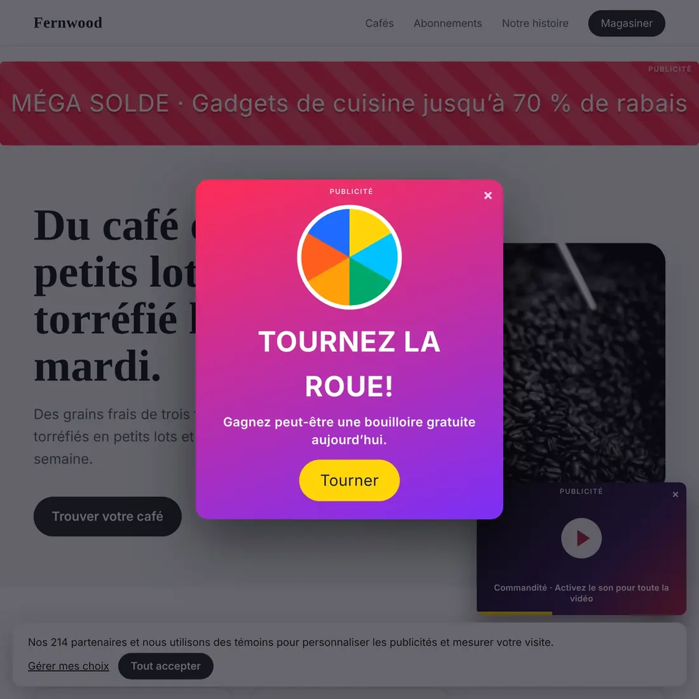

Capture d’écran d’une page Web sans publicité ni fenêtres surgissantes
Vérifié le 4 novembre 2026. Écrit pour Vitrine 1.2.2.
Une capture d’écran de page entière a deux tâches : prendre la page de haut en bas, et laisser l’encombrement de côté. La capture pleine taille de Chrome fait la première et rien de la seconde. Voici les façons d’obtenir les deux, et ce que chacune vous coûte.
Façon 1 : nettoyer la page à la main, puis capturer
Fermez la fenêtre surgissante. Répondez au bandeau de témoins. Faites défiler jusqu’en bas pour charger les images différées. Utilisez ensuite la capture intégrée de Chrome : ouvrez les outils de développement (F12 sous Windows, Cmd + Option + I sur Mac), appuyez sur Ctrl + Maj + P (Cmd + Maj + P sur Mac), tapez « screenshot » et choisissez la commande Capture full size screenshot (son nom peut différer si vos outils sont en français).
C’est gratuit et ça marche. C’est aussi lent, et les publicités qui font partie de la page restent dans l’image. Les étapes complètes sont dans capture d’écran de page entière dans Chrome.
Façon 2 : un bloqueur de publicités, puis capturer
Si vous utilisez déjà un bloqueur de publicités, activez-le sur la page, puis faites la capture de la même façon. Les publicités disparaissent parce que la page elle-même a changé. Cela veut dire aussi que la page capturée n’est pas celle que voient les autres, ce qui compte si la capture sert de preuve ou à une revue de conception. Les bandeaux de témoins et les fenêtres surgissantes passent souvent entre les mailles.
Façon 3 : le mode lecture
Certains navigateurs réduisent une page à son texte et à ses images. Le mode Lecteur de Safari, par exemple, retire la plupart des menus et des publicités avant la capture. Vous obtenez un article propre, mais pas la vraie page : la mise en page, les couleurs et l’en-tête sont partis. C’est bien pour lire, et mauvais pour montrer une conception.
Façon 4 : un outil de capture en ligne
Plusieurs sites Web prennent un lien, chargent la page sur leurs propres ordinateurs et renvoient une image, sans bandeaux de témoins ni publicités. Ils sont rapides pour une page publique. Il faut connaître le compromis :
- Vous leur envoyez le lien, et c’est eux qui chargent la page, pas vous. Une page où vous êtes connecté, comme une boîte de réception ou un tableau de bord, n’est généralement pas ce qu’ils voient.
- Les très longues pages peuvent revenir coupées.
- Beaucoup limitent le nombre de captures, ou demandent de payer.
Façon 5 : Vitrine, qui les masque pour vous
Vitrine est une extension Chrome gratuite. Elle fait le nettoyage dans le cadre de la capture.
- Ajoutez Vitrine depuis le Chrome Web Store et épinglez-la.
- Ouvrez la page. Appuyez sur Alt + Maj + S (Windows) ou Option + Maj + S (Mac).
- Vitrine fait défiler la page, charge les images différées, n’affiche les en-têtes fixes qu’une fois, et masque les bandeaux de témoins, bulles de clavardage, fenêtres surgissantes, publicités et cases publicitaires vides avant chaque prise de vue. Elle les remet en place tout de suite après.
- Le Studio s’ouvre avec la page entière. Copiez-la, ou téléchargez-la en PNG, JPG ou PDF.


Les deux images ci-dessus montrent des pages fictives : aucun vrai site n’y paraît. La première est ce qu’attrape une capture simple. La seconde est la capture de Vitrine.
Les détails, en toute franchise
- Deux réglages, tous deux activés par défaut. « Masquer les fenêtres surgissantes et bandeaux de témoins » se trouve dans les Réglages de Vitrine (ouvrez la Bibliothèque, puis Réglages). « Masquer les publicités » y est aussi, et dans le menu de la barre d’outils. Ils s’appliquent aux captures de page entière.
- Rien n’est bloqué sur la page elle-même. Vitrine masque les éléments le temps de la capture, puis les remet en place. Votre page n’est pas modifiée par la suite.
- Aucun outil ne reconnaît tout. Une publicité inhabituelle ou une fenêtre surgissante sur mesure peut passer. Si un élément dont vous avez besoin disparaît, désactivez l’option et recapturez.
- Les détails privés peuvent être floutés avant la prise de vue, comme les courriels et les clés d’API.
- Cela fonctionne sur les pages où vous êtes connecté, parce que la capture se fait dans votre propre onglet Chrome. Vos captures ne quittent jamais votre ordinateur, et il n’y a aucun compte.
Quelle façon choisir?
- Une capture ponctuelle d’une page simple : nettoyez à la main et utilisez DevTools.
- Une page que vous voulez garder telle qu’elle est, mais sans l’encombrement : une extension qui le masque pendant la capture.
- Une page publique, sans installation, et vous ne craignez pas d’envoyer le lien : un outil en ligne.
Ce que ça coûte
Capturer, copier et exporter est gratuit, pour de bon. Pro coûte 24 $ US une seule fois, sans abonnement. Le prix de lancement est de 19 $ US jusqu’au 30 novembre 2026. Voyez la comparaison des prix et l’accueil de Vitrine.
À lire aussi : transformer une capture d’écran de page Web en vidéo ou en carrousel.